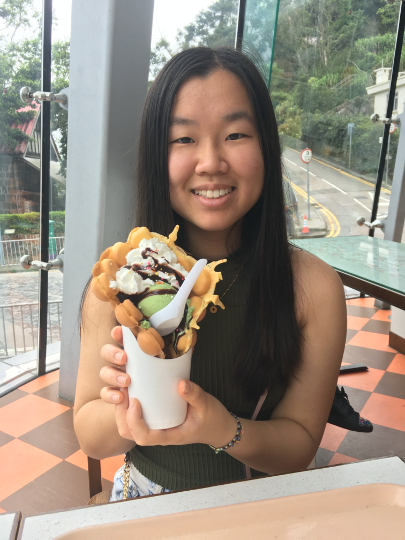
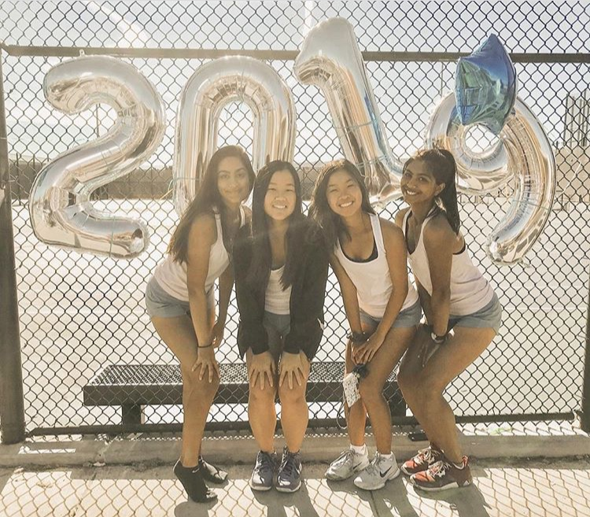

ABOUT ME
Who I Am
Born in Boston and grown up in the Bay Area, I am currently a rising sophomore at the University of California, Berkeley studying data science and economics. I am passionate about utilizing technology to develop creative solutions to business challenges. As I am constantly looking to gain more skills and grow as an individual, I'm always actively seeking and involving myself in new opportunities. Outside of academics, I am a huge foodie and love trying out unique new places to eat as well as experimenting with my own recipes. I also enjoy playing sports, going on walks, and exploring the areas around me. I'm very open to chatting about anything, and love having meaningful conversations with others!
Some more facts about me:
- I'm an ISTJ
- My favorite colors are #bdd8ff and #c6fffb
- I LOVE reality competiton shows, especially Survivor and The Amazing Race, and hope to compete on one someday!
- I have a habit of collecting things and find it super difficult to get rid of them
- I'm allergic to all nuts except for pistachios :(
Organizations
Here are a couple of organizations that have given me so many special memories, valuable skills, and opportunities to meet some amazing people. I am so grateful to be a part of them!
PI SIGMA EPSILON
PSE is UC Berkeley's professional business and marketing fraternity. We focus on professional development which takes form in a semester-long program which exposes members to the different fields within business through firsthand experience. As part of the Pi Class, I was able to learn and grow so much as an individual and really show myself how much I am truly capable of when I set my mind to something. There were so many instances where I was placed in a position that was extremely out of my comfort zone, yet I believe that these times were the ones that had the most impact in fueling my personal growth.
SEED BASE CONSULTING
SBC is a student-run strategy consultancy that provides business solutions to companies of all growth stages. We offer a variety of services, such as market research and growth strategy, but much of what we do largely comes down to what our clients need. After joining as a strategy consultant in my first semester, I was able to gain so many valuable skills and this helped propel me into becoming a project manager for the following semester. Here, I got more firsthand experience communicating with clients and leading my own team meetings. I've had so many great opportunities in SBC, and hope to give the same to future members.
Hobbies
In my free time, I love exploring different activities and exposing myself to new opportunities, but here are a couple that I really love and always find myself coming back to!
CULINARY ARTS
I remember the first time I ever tried to bake chocolate chip cookies, they turned out completely hard and dry like rocks. Unsure of where I went wrong since I thought I followed the recipe exactly, I felt I simply wasn't cut out for baking. However, I continued watching these baking videos on Youtube frequently, and found it fascinating how easy and delicious those chefs made it seem. Wanting to make the same foods myself, I began trying over and over again to bake new desserts and dishes. As I continued attempting to make the wonderful foods I saw online, I saw myself improving with each recipe. Soon enough, I knew many of the tips and tricks to baking different desserts successfully.
Once feeling comfortable with the oven, I turned to the stove, where there are endless possibilities to cook so many wonderful dishes. Starting out simple, I picked up some tips and tricks from my parents, and soon expanded into experimenting with my own flavors. Currently, I am still attempting and enjoying new recipes every day, and will definitely continue to expand my culinary knowledge.
TENNIS
I started playing when I was around six years old. My dad and I would head over to our community tennis courts a few times a week and practice hitting the ball back and forth. As a child, I knew I enjoyed playing for fun, but didn't realize how important tennis would actually be in my life as I grew up. After moving to a new school district, I signed up for daily lessons, constantly practicing in hopes of making it onto the high school team.
I'm happy to say that I did make it onto the team, playing the #1 position on the JV team my freshman year and moving up to Varsity for the remaining high school years. I had so much fun playing the sport I loved and fueling my competitve side through our weekly practices and matches. Tennis is one of the most important outlets for me to reduce stress and clear my mind, and is something I'll always look forward to.